Section 2.6 A planarity algorithm
¶Let \(H\) be a given subgraph of \(G\text{.}\) Let \(B\subseteq E(G)\backslash E(H)\) such that \(e_1,e_2\in B\) if and only if there exist a walk \(W\) beginning with \(e_1\) and ending with \(e_2\) such that no internal vertex of \(W\) is a vertex of \(H\text{.}\) Then \(B\) is a bridge of \(H\) in \(G\).
The vertices of attachment of \(B\) to \(H\) is the vertices of \(B\) that is also on \(H\text{,}\) \(V(B)\cap V(H)=V(B,H)\text{.}\)
A bridge \(B\) of \(H\) is drawable in a face \(f\) of an embedding \(H'\) of \(H\) if the vertices of attachment of \(B\) to \(H\) are contained in the boundary of \(f\text{.}\)
The set of faces of an embedding \(H'\) of \(H\) in which \(B\) is drawable is denoted by \(F(B,H')\text{.}\)
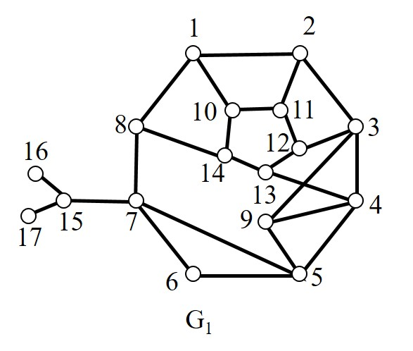
Example 2.6.2.
Determine the bridges of \(C\) in the graph \(G_1\) in Figure 2.6.1.There are bridges of \(C\) in the graph \(G_1\text{:}\)
Algorithm 2.6.3. A planarity algorithm.
- STEP 1
-
Let \(G_1\) be a cycle of \(G\text{.}\)
Let \(G_1'\) be an embedding of \(G_1\text{.}\)
Set \(i=1\text{.}\)
- STEP 2
-
IF \(E(G)\backslash E(G_i)=\varnothing\text{,}\) \(G\) is planar STOP.
ELSE Determine all the bridges of \(G_i\) in \(G\) and find \(F(B,G_i')\) for each bridge.
- STEP 3
-
IF there exist a bridge \(B\) such that \(F(B,G_i')=\varnothing\text{,}\) \(G\) is non-planar, STOP.
ELSEIF there exist a bridge \(B\) such that \(|F(B,G_i')|=1\text{,}\) let \(f=F(B,G_i')\text{,}\)
ELSE let \(B\) be any bridge and \(f\in F(B,G_i')\text{.}\)
- STEP 4
-
Choose a path \(P_i\subseteq B\) connecting two vertices of attachement of \(B\) to \(G_i\text{.}\)
Let \(G_{i+1}\) be the graph \(G_i\) together with \(P_i\text{.}\)
Obtain a planar embedding of \(G_{i+1}'\) of \(G_{i+1}\text{,}\) by drawing \(P_i\) in the face \(f\) of \(G_i'\text{.}\)
- STEP 5
Set \(i=i+1\) and go to STEP 2.
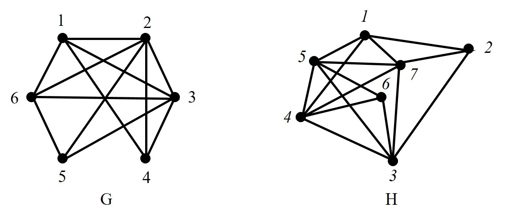
Example 2.6.5.
Make use of the planarity algorithm to determine whether graphs \(G\) and \(H\) in Figure 2.6.4 are planar.Initialisation: Choose the cycle \(G_1=(1,2,3,5,6,1)\) and embed it in the plane as \(G_1'\text{.}\) Set \(i=1\text{.}\)
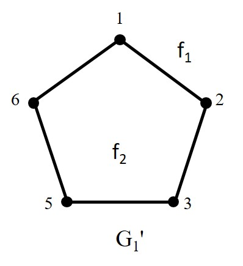
\(i=1:\)
- STEP 2
-
\(E(G)\backslash E(G_1)\neq\varnothing\text{.}\)
There are 5 bridges of \(G_1'\) in the graph \(G\text{:}\)
\begin{align*} &B_1 = \{13\}; F(B_1,G_1')=\{f_1,f_2\} \\ &B_2 = \{26\}; F(B_2,G_1')=\{f_1,f_2\}\\ &B_3 = \{25\}; F(B_3,G_1')=\{f_1,f_2\}\\ &B_4 = \{36\}; F(B_4,G_1')=\{f_1,f_2\}\\ &B_5 = \{14,24,34\}; F(B_5,G_1')=\{f_1,f_2\} \end{align*} - STEP 3
Choose \(B_1\) and let \(f=f_2\text{.}\)
- STEP 4
-
Let \(P_1=(1,3)\text{.}\)
Draw \(G_2'\text{.}\)
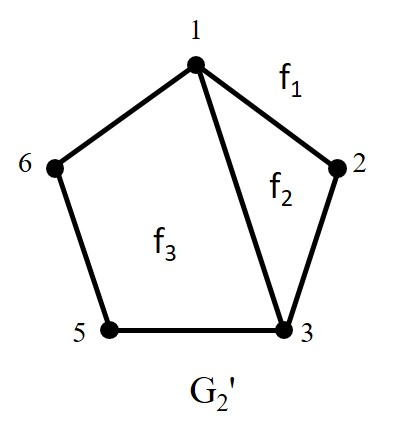
- STEP 5
Set \(i=2\) and go to STEP 2.
\(i=2:\)
- STEP 2
-
\(E(G)\backslash E(G_2)\neq\varnothing\text{.}\)
There are 4 bridges of \(G_2'\) in the graph \(G\text{:}\)
\begin{align*} &B_2 = \{26\}; F(B_2,G_2')=\{f_1\}\\ &B_3 = \{25\}; F(B_3,G_2')=\{f_1\}\\ &B_4 = \{36\}; F(B_4,G_2')=\{f_1,f_3\}\\ &B_5 = \{14,24,34\}; F(B_5,G_2')=\{f_1,f_2\} \end{align*} - STEP 3
Choose \(B_2\) and let \(f=f_1\text{.}\)
- STEP 4
-
Let \(P_1=(2,6)\text{.}\)
Draw \(G_3'\text{.}\)
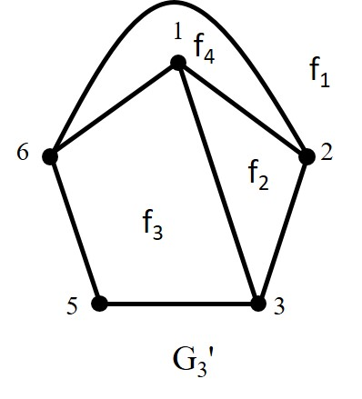
- STEP 5
Set \(i=3\) and go to STEP 2.
\(i=3:\)
- STEP 2
-
\(E(G)\backslash E(G_3)\neq\varnothing\text{.}\)
There are 3 bridges of \(G_3'\) in the graph \(G\text{:}\)
\begin{align*} &B_3 = \{25\}; F(B_3,G_3')=\{f_1\}\\ &B_4 = \{36\}; F(B_4,G_3')=\{f_1,f_3\}\\ &B_5 = \{14,24,34\}; F(B_5,G_3')=\{f_2\} \end{align*} - STEP 3
Choose \(B_3\) and let \(f=f_1\text{.}\)
- STEP 4
-
Let \(P_1=(2,5)\text{.}\)
Draw \(G_4'\text{.}\)
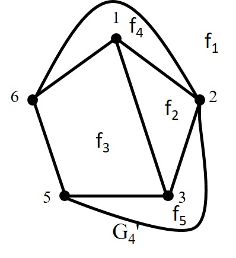
- STEP 5
Set \(i=4\) and go to STEP 2.
\(i=4:\)
- STEP 2
-
\(E(G)\backslash E(G_4)\neq\varnothing\text{.}\)
There are 2 bridges of \(G_4'\) in the graph \(G\text{:}\)
\begin{align*} &B_4 = \{36\}; F(B_4,G_4')=\{f_3\}\\ &B_5 = \{14,24,34\}; F(B_5,G_4')=\{f_2\} \end{align*} - STEP 3
Choose \(B_4\) and let \(f=f_3\text{.}\)
- STEP 4
-
Let \(P_1=(3,6)\text{.}\)
Draw \(G_5'\text{.}\)
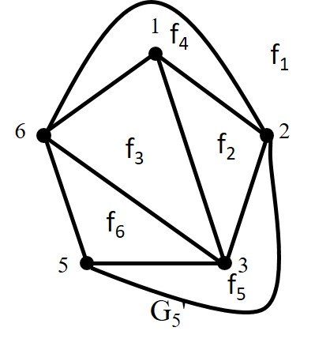
- STEP 5
Set \(i=5\) and go to STEP 2.
\(i=5:\)
- STEP 2
-
\(E(G)\backslash E(G_5)\neq\varnothing\text{.}\)
There is 1 bridges of \(G_5'\) in the graph \(G\text{:}\)
\begin{align*} &B_5 = \{14,24,34\}; F(B_5,G_5')=\{f_2\} \end{align*} - STEP 3
Choose \(B_5\) and let \(f=f_2\text{.}\)
- STEP 4
-
Let \(P_1=(1,4,2)\text{.}\)
Draw \(G_6'\text{.}\)
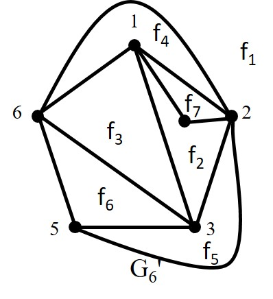
- STEP 5
Set \(i=6\) and go to STEP 2.
\(i=6:\)
- STEP 2
-
\(E(G)\backslash E(G_6)\neq\varnothing\text{.}\)
There is 1 bridges of \(G_6'\) in the graph \(G\text{:}\)
\begin{align*} &B_6 = \{34\}; F(B_6,G_6')=\{f_2\} \end{align*} - STEP 3
Choose \(B_6\) and let \(f=f_2\text{.}\)
- STEP 4
-
Let \(P_1=(3,4)\text{.}\)
Draw \(G_7'\text{.}\)
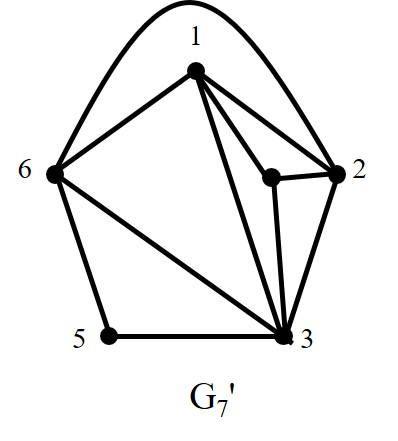
- STEP 5
Set \(i=7\) and go to STEP 2.
\(i=7:\)
- STEP 2
\(E(G)\backslash E(G_7)=\varnothing\text{,}\) hence \(G\) is planar.
Initialisation: Choose the cycle \(G_1=(1,2,3,4,5,1)\) and embed it in the plane as \(H_1'\text{.}\) Set \(i=1\text{.}\)
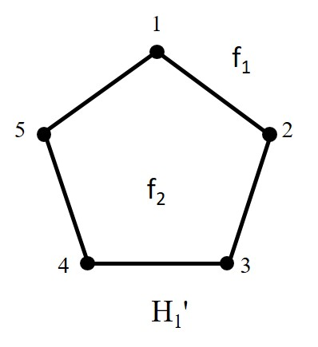
\(i=1:\)
- STEP 2
-
\(E(H)\backslash E(H_1)\neq\varnothing\text{.}\)
There are 4 bridges of \(H_1'\) in the graph \(H\text{:}\)
\begin{align*} &B_1 = \{14\}; F(B_1,H_1')=\{f_1,f_2\} \\ &B_2 = \{35\}; F(B_2,H_1')=\{f_1,f_2\}\\ &B_3 = \{36,46,56\}; F(B_3,H_1')=\{f_1,f_2\}\\ &B_4 = \{17,27,37,47,57\}; F(B_4,H_1')=\{f_1,f_2\} \end{align*} - STEP 3
Choose \(B_1\) and let \(f=f_1\text{.}\)
- STEP 4
-
Let \(P_1=(1,4)\text{.}\)
Draw \(H_2'\text{.}\)
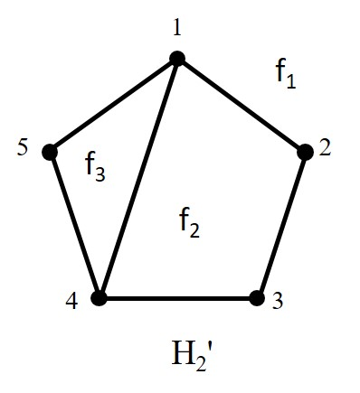
- STEP 5
Set \(i=2\) and go to STEP 2.
\(i=2:\)
- STEP 2
-
\(E(H)\backslash E(H_2)\neq\varnothing\text{.}\)
There are 3 bridges of \(H_2'\) in the graph \(H\text{:}\)
\begin{align*} &B_2 = \{35\}; F(B_2,H_2')=\{f_1\}\\ &B_3 = \{36,46,56\}; F(B_3,H_2')=\{f_1\}\\ &B_4 = \{17,27,37,47,57\}; F(B_4,H_2')=\{f_1\} \end{align*} - STEP 3
Choose \(B_2\) and let \(f=f_1\text{.}\)
- STEP 4
-
Let \(P_1=(3,5)\text{.}\)
Draw \(H_3'\text{.}\)
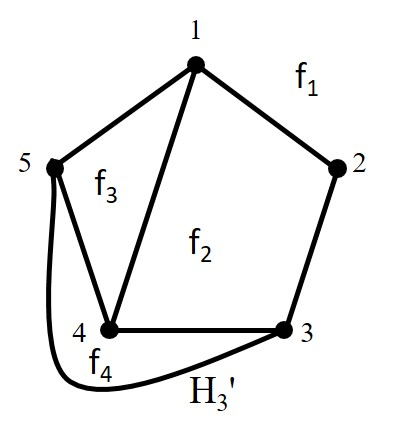
- STEP 5
Set \(i=3\) and go to STEP 2.
\(i=3:\)
- STEP 2
-
\(E(H)\backslash E(H_3)\neq\varnothing\text{.}\)
There are 2 bridges of \(H_3'\) in the graph \(H\text{:}\)
\begin{align*} &B_3 = \{36,46,56\}; F(B_3,H_3')=\{f_4\}\\ &B_4 = \{17,27,37,47,57\}; F(B_4,H_3')=\varnothing \end{align*} - STEP 3
Since \(F(B_4,H_3')=\varnothing\text{,}\) \(H\) is not planar.